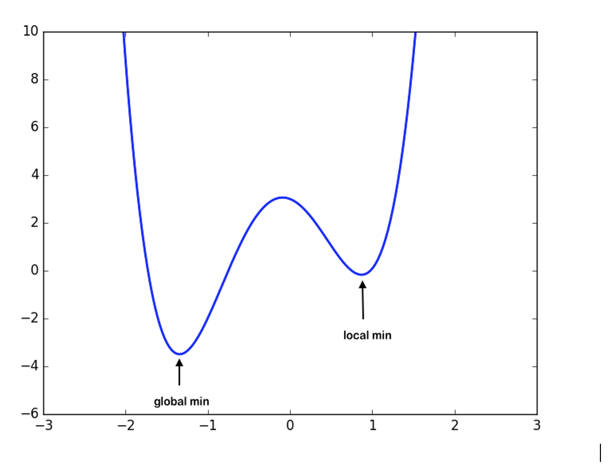

Look for Optimized Algorithm for training purpose for improved accuracy
Context: To train a neural network model, we must define a loss function in order to measure the difference between our model predictions and the label that we want to predict. What we are looking for is a certain set of weights, with which the neural network can make an accurate prediction, which automatically leads to a lower value of the loss function
Problem: if you use brute force method to identify the best parameters for your Deep Neural Network it will take about 3.42*10⁵⁰ years for the world’s fastest supercomputer
Solution: The Optimized learning algorithms try to lower the loss function by updating the model parameters in response to the output of the loss function. Thereby helping to reach the Global Minima with the lowest loss and most accurate output.
Example: 